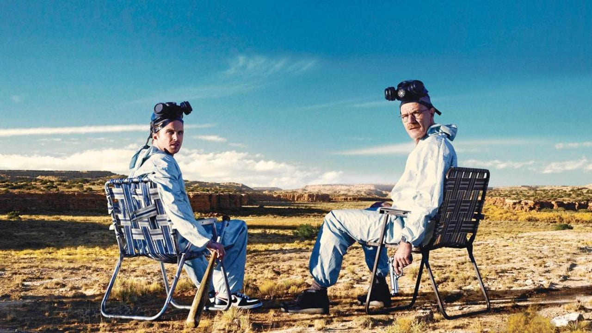

Sountrack breaking bad

La serie Breaking Bad producida y escrita por Vince Gilligan
Producida por Sony Pictures pertenece al genero del Drama, Crimen, idioma del Thriller
inglés salio el 20 de enero de 2008 – 29 de septiembre
de 2013 Episodios: 62 (5 temporadas) su ambientación es en Albuquerque, Nuevo México,
Estados Unidos
- Primera Temporada
- Episodio 01 - Pilot
- Episodio 02 - Cat's in the Bag...
- Episodio 03 - ...And the Bag's in the River
- Episodio 04 - Cancer Man
- Episodio 05 - Gray Matter
- Episodio 06 - Crazy Handful of Nothin'
- Episodio 07 - A No-Rough-Stuff-Type Deal
- Segunda Temporada
- Episodio 1: Seven Thirty-Seven
- Episodio 2: Grilled
- Episodio 3: Bit by a Dead Bee
- Episodio 4: Down
- Episodio 5: Breakage
- Episodio 6: Peekaboo
- Episodio 7: Negro y azul
- Episodio 8: Better Call Saul
- Episodio 9: 4 Days Out
- Episodio 10: Over
- Episodio 11: Mandala
- Episodio 12: Phoenix
- Episodio 13: ABQ
- Tercera Temporada
- Episodio 1: No más
- Episodio 2: Caballo sin nombre
- Episodio 3: I.F.T.
- Episodio 4: Green Light
- Episodio 5: Más
- Episodio 6: Sunset
- Episodio 7: One Minute
- Episodio 8: I See You
- Episodio 9: Kafkaesque
- Episodio 10: Fly
- Episodio 11: Abiquiu
- Episodio 12: Half Measures
- Episodio 13: Full Measure
- Cuarta Temporada
- Episodio 1: Box Cutter
- Episodio 2: Thirty-Eight Snub
- Episodio 3: Open House
- Episodio 4: Bullet Points
- Episodio 5: Shotgun
- Episodio 6: Cornered
- Episodio 7: Problem Dog
- Episodio 8: Hermanos
- Episodio 9: Bug
- Episodio 10: Salud
- Episodio 11: Crawl Space
- Episodio 12: End Times
- Episodio 13: Face Off
- Quinta Temporada
- Episodio 1: Live Free or Die
- Episodio 2: Madrigal
- Episodio 3: Hazard Pay
- Episodio 4: Fifty-One
- Episodio 5: Dead Freight
- Episodio 6: Buyout
- Episodio 7: Say My Name
- Episodio 8: Gliding Over All
- Episodio 9: Blood Money
- Episodio 10: Buried
- Episodio 11: Confessions
- Episodio 12: Rabid Dog
- Episodio 13: To'hajiilee
- Episodio 14: Ozymandias
- Episodio 15: Granite State
- Episodio 16: Felina